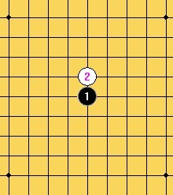
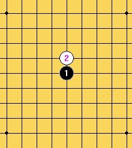
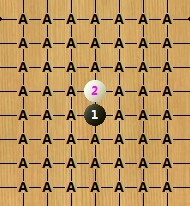

宽容规则测试（逆刃VS茗弈小刀）1 ===茗弈小刀胜
#1 <font color="red">宽容规则测试（逆刃VS茗弈小刀）1 ===茗弈小刀胜</font> 作者：逆刃 发表时间：2012-4-23 18:17:25
这个规则是由我平时自己玩的规则中演变出来的，觉得有点意思，没有要改变现行职业比赛规则的意思，只是发出来大家交流下，有希望玩的也可以一起玩玩。
宽容规则介绍：
1. A下第一手和第二手。这两子必须在四角星位范围以内，且白2须紧贴黑1（直指或斜指）。
2. B下第三手，必须在四角星位范围以内，且应与黑1，白2任一子距离3格或3格以内。
3. A下第四手，无任何限制。
4. B有权作出两种选择：
4-1. 自己下第5手，无任何限制。
4-2. 交给A下第5手，同样无任何限制。
5. 无论是A还是B下第5手，对手方均有权选择执黑或执白。
6. 以下按标准禁手规则行棋。
以上规则相应解释：
1：
 

2：



大概说一下，这个规则包括了目前的rif，山口，也包括了边角，其实第4第5手是有相应限制的，因为双方都需要保证在第5手后平衡。
另：
1：棋盘可以用围棋19路盘；
2: 5手后亦可双方无禁手行棋。
［此帖子已被 逆刃 在 2012-4-23 18:25:40 编辑过］
［此帖子已被 逆刃 在 2012-4-28 12:23:22 编辑过］
#2 Re:宽容规则测试（逆刃VS茗弈小刀）1 作者：逆刃 发表时间：2012-4-23 18:21:10
这局我先吧，有请。
#3 Re:宽容规则测试（逆刃VS茗弈小刀）1 作者：茗弈小刀 发表时间：2012-4-23 18:25:26
#4 Re:宽容规则测试（逆刃VS茗弈小刀）1 作者：逆刃 发表时间：2012-4-23 18:28:28
#5 Re:宽容规则测试（逆刃VS茗弈小刀）1 作者：茗弈小刀 发表时间：2012-4-23 19:07:02
#6 Re:宽容规则测试（逆刃VS茗弈小刀）1 作者：逆刃 发表时间：2012-4-23 19:29:46
#7 Re:宽容规则测试（逆刃VS茗弈小刀）1 作者：茗弈小刀 发表时间：2012-4-24 17:42:06
#8 Re:宽容规则测试（逆刃VS茗弈小刀）1 作者：逆刃 发表时间：2012-4-25 22:08:36
#9 Re:宽容规则测试（逆刃VS茗弈小刀）1 作者：茗弈小刀 发表时间：2012-4-27 8:29:43
#10 Re:宽容规则测试（逆刃VS茗弈小刀）1 作者：逆刃 发表时间：2012-4-27 9:51:16
#11 Re:宽容规则测试（逆刃VS茗弈小刀）1 作者：茗弈小刀 发表时间：2012-4-27 11:48:31
#12 Re:宽容规则测试（逆刃VS茗弈小刀）1 作者：逆刃 发表时间：2012-4-27 16:17:09
#13 Re:宽容规则测试（逆刃VS茗弈小刀）1 作者：茗弈小刀 发表时间：2012-4-27 16:25:20
#14 Re:宽容规则测试（逆刃VS茗弈小刀）1 作者：逆刃 发表时间：2012-4-27 17:13:09
#15 Re:宽容规则测试（逆刃VS茗弈小刀）1 作者：茗弈小刀 发表时间：2012-4-27 18:02:34
#16 Re:宽容规则测试（逆刃VS茗弈小刀）1 作者：逆刃 发表时间：2012-4-27 18:19:52
#17 Re:宽容规则测试（逆刃VS茗弈小刀）1 作者：茗弈小刀 发表时间：2012-4-27 19:07:31
#18 Re:宽容规则测试（逆刃VS茗弈小刀）1 作者：逆刃 发表时间：2012-4-27 20:45:22
投啦。
#19 Re:宽容规则测试（逆刃VS茗弈小刀）1 作者：茗弈小刀 发表时间：2012-4-27 21:53:26